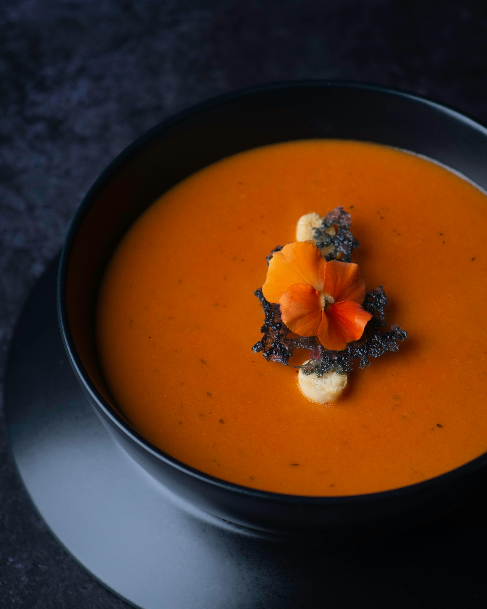

Home
Soup recipe

fresh tomato soup
h2p>Roasted tomatoes and garlic blended into a smooth, velvety soup, finished with a splash of cream and fresh basil — best served warm with crusty bread.
Ingredients
salt, pepper and a pinch of sugar
Steps
Roast: Toss 2.2 pounds Roma tomatoes, halved, 1 pieces yellow onion, quartered, and 4 pieces garlic cloves with 3 tablespoons olive oil and season. Roast at 200°C for 40 minutes
Blend: Blend roasted vegetables with 2.1 cups broth until smooth.
Simmer & finish: Heat in a pot 10 minutes Stir in 0.3 cups heavy cream and 10 pieces fresh basil. Serve.